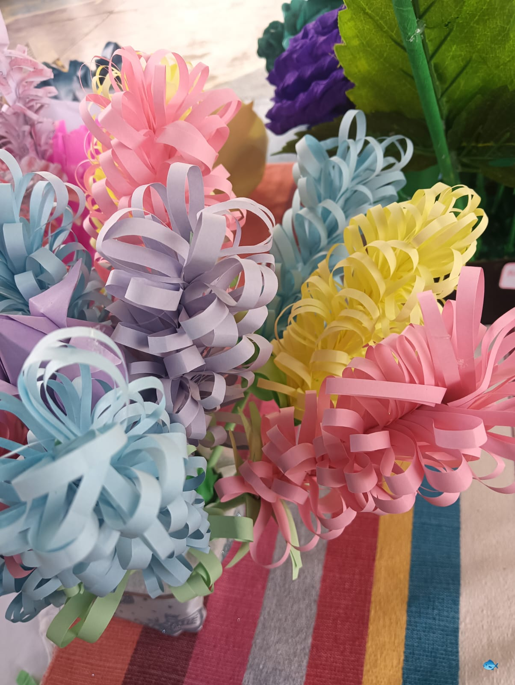
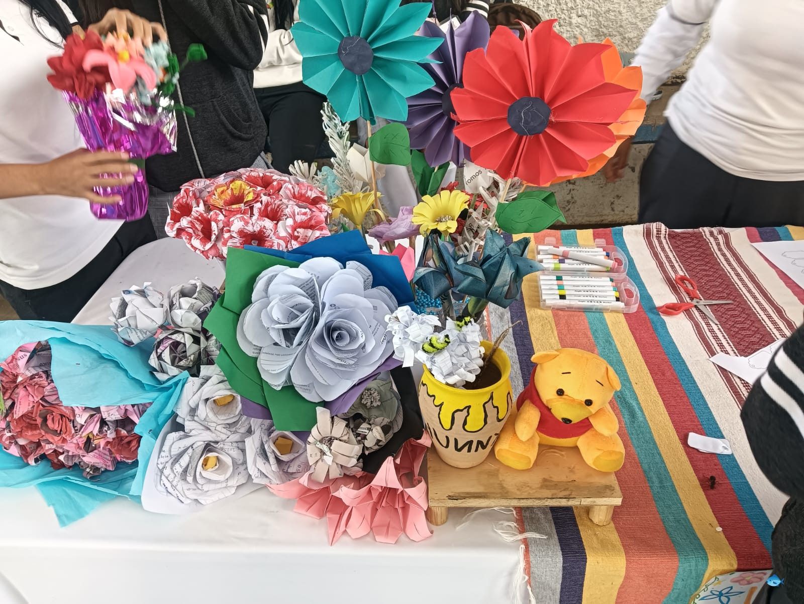
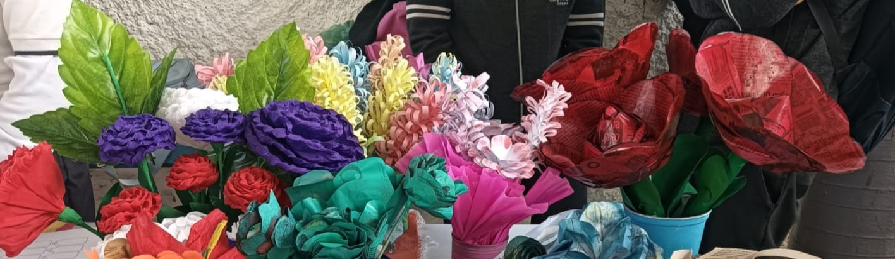

Elaboración de flores de papel
Las flores de papel son una forma creativa y hermosa de decoración hecha completamente a mano. Se elaboran con materiales sencillos como papel de colores, tijeras y pegamento, pero el resultado puede ser muy llamativo y elegante. Además de ser económicas, también fomentan la creatividad y la paciencia, porque requieren dedicación para darles forma. Las flores de papel son una muestra de que con materiales simples se pueden crear cosas muy bonitas y significativas.
- Ecologicas
- Duraderas
Flores elaboradas


